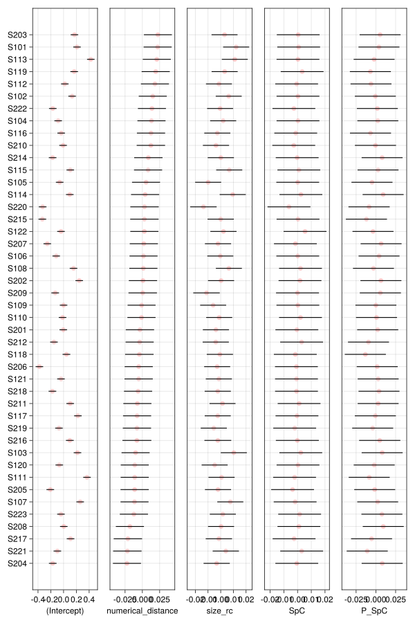
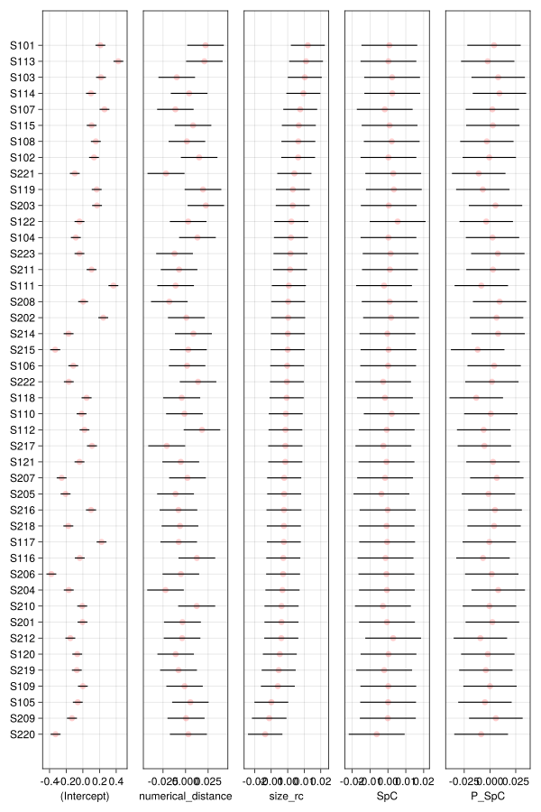
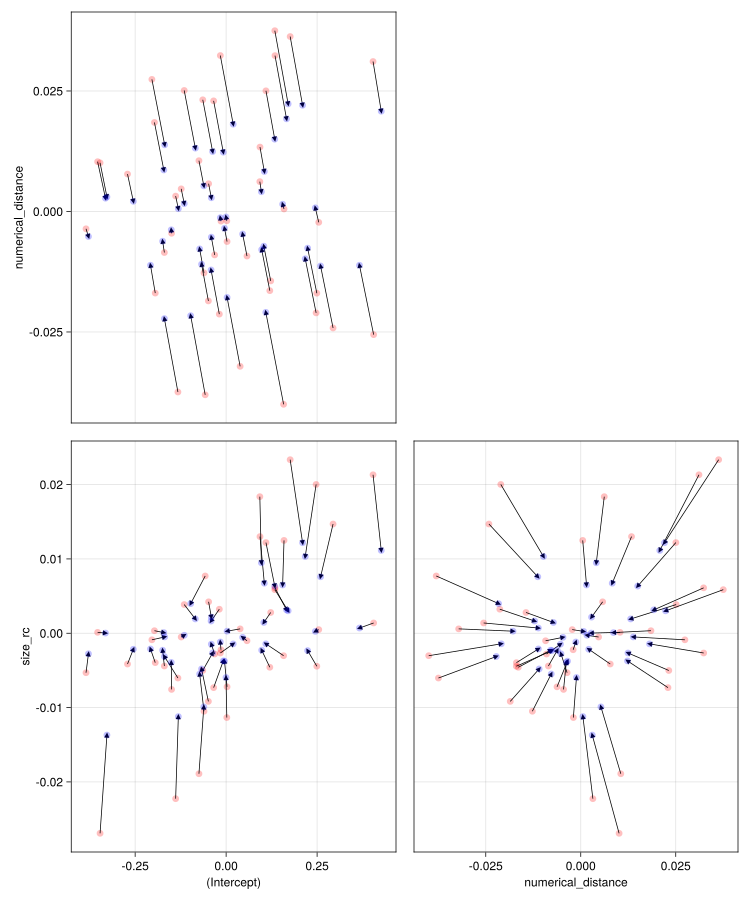

using AlgebraOfGraphics
using Arrow
using CairoMakie # graphics back-end
using CategoricalArrays
using Chain
using DataFrames
using DataFrameMacros # simplified dplyr-like data wrangling
using MixedModels
using MixedModelsMakie # diagnostic plots
using ProgressMeter
using Random # random number generators
using RCall # call R from Julia
using StatsBase
using StatsModels
ProgressMeter.ijulia_behavior(:clear);
CairoMakie.activate!(; type="svg");Oliver Lindemann: Two attributes of numerical meaning
RePsychLing in SMLP2022
1 Description
The study aims to examine the interactions of space- and size-congruity effects while number processing.
The numbers 1 to 9 (\(N\)) were presented in different six font sizes (\(V_\text{size}=[-3, -2, -1, 1, 2, 3]\)) and at six different stimulus locations (three left and three right from screen center, \(V_\text{space}=[-3, -2, -1, 1, 2, 3]\)). For each trial, a size and space-congruity parameter, \(C\), could be calculated that varies between \(-1\) and \(+1\) (see formula below).
The mixed effect model of the reaction times aims to consider, beside these two congruity parameters and their interaction, also the size- or space-congruity in the previous trial (\(n-1\), ‘Gratton effect’).
Congruity was defined as \[C = \frac{V}{3} \cdot \frac{N-5}{4} = \frac{V(N-5)}{12}\]
2 Setup
2.1 Environment
2.2 Packages
2.3 Code book
For preprocessing see earlier script. Here we have only the relevant variables for the following analyses.
Subj: Subject IDdigit: Presented digit (1 to 9, except 5)size: Stimulus sizesize_rc: Stimulus size (-3 to +3) (recalculated)pos: Stimulus positionpos_rc: Stimulus position (-3 to +3) (recalculated)numerical_distance: Distance to 5 (abs(5-digit))SiC: Size congruity parameter (-1 to +1)SpC: Spatial congruity parameter (-1 to +1)P_SiC: Size congruity of the previous trial (-1 to +1)P_SpC: Spatial congruity of the previous trial (-1 to +1)speed: Speed of responding in Hz, [1/s]
dat = DataFrame(Arrow.Table("./data/Lindemann_NumMeaning.arrow"));
describe(dat)12 rows × 7 columns
| variable | mean | min | median | max | nmissing | eltype | |
|---|---|---|---|---|---|---|---|
| Symbol | Union… | Any | Union… | Any | Int64 | Union | |
| 1 | Subj | S101 | S223 | 0 | Union{Missing, String} | ||
| 2 | digit | 5.00421 | 1.0 | 4.0 | 9.0 | 0 | Union{Missing, Float64} |
| 3 | size | 107.739 | 30.0 | 117.0 | 232.0 | 0 | Union{Missing, Float64} |
| 4 | size_rc | 0.00874777 | -3.0 | 1.0 | 3.0 | 0 | Union{Missing, Float64} |
| 5 | pos | 0.0971975 | -300.0 | 100.0 | 300.0 | 0 | Union{Missing, Float64} |
| 6 | pos_rc | 0.000971975 | -3.0 | 1.0 | 3.0 | 0 | Union{Missing, Float64} |
| 7 | numerical_distance | 2.50235 | 1.0 | 3.0 | 4.0 | 0 | Union{Missing, Float64} |
| 8 | SiC | -0.000344241 | -1.0 | 0.0833333 | 1.0 | 0 | Union{Missing, Float64} |
| 9 | SpC | 0.000256493 | -1.0 | 0.0833333 | 1.0 | 0 | Union{Missing, Float64} |
| 10 | P_SiC | 0.000636598 | -1.0 | 0.0833333 | 1.0 | 41 | Union{Missing, Float64} |
| 11 | P_SpC | 0.00141541 | -1.0 | 0.0833333 | 1.0 | 41 | Union{Missing, Float64} |
| 12 | speed | 1.68934 | 0.667557 | 1.67785 | 3.90625 | 0 | Union{Missing, Float64} |
3 Contrasts
We have only the random factor Subj and declare it as a grouping variable.
contrasts = Dict(:Subj => Grouping());4 Model selection
4.1 Complex LMM
We start with a complex LMM; it is not maximal because no interaction terms in RES.
m_cpx = let
form = @formula(speed ~ 1 + numerical_distance + size_rc + pos_rc +
SiC+SpC+P_SiC+P_SpC + SiC&SpC + SiC&P_SiC + SiC&P_SpC + SpC&P_SiC + SpC&P_SpC +
(1 + numerical_distance + size_rc + pos_rc + SiC + SpC + P_SiC + P_SpC | Subj));
fit(MixedModel, form, dat; contrasts);
end
issingular(m_cpx) # overparameterized
VarCorr(m_cpx)Minimizing 2175 Time: 0:00:00 ( 0.40 ms/it)
objective: 2344.8413230134| Column | Variance | Std.Dev | Corr. | |||||||
|---|---|---|---|---|---|---|---|---|---|---|
| Subj | (Intercept) | 0.03272085 | 0.18088907 | |||||||
| numerical_distance | 0.00024710 | 0.01571935 | +0.05 | |||||||
| size_rc | 0.00006684 | 0.00817533 | +0.77 | +0.26 | ||||||
| pos_rc | 0.00002541 | 0.00504086 | -0.19 | +0.42 | +0.35 | |||||
| SiC | 0.00022587 | 0.01502909 | +0.49 | +0.12 | +0.32 | +0.34 | ||||
| SpC | 0.00025364 | 0.01592598 | +0.55 | +0.10 | +0.94 | +0.52 | +0.21 | |||
| P_SiC | 0.00009117 | 0.00954844 | +0.58 | -0.78 | +0.21 | -0.49 | +0.27 | +0.19 | ||
| P_SpC | 0.00035560 | 0.01885740 | +0.13 | -0.09 | +0.44 | -0.11 | -0.70 | +0.51 | +0.05 | |
| Residual | 0.06910971 | 0.26288726 |
This model is overparameterized.
4.2 Very Simple LMM
m_voi = let
form = @formula(speed ~ 1 + numerical_distance + size_rc + pos_rc +
SiC+SpC+P_SiC+P_SpC + SiC&SpC + SiC&P_SiC + SiC&P_SpC + SpC&P_SiC + SpC&P_SpC +
(1 | Subj));
fit(MixedModel, form, dat; contrasts);
end
lrtest(m_voi, m_cpx)Likelihood-ratio test: 2 models fitted on 12305 observations
─────────────────────────────────────────────────────────
DOF ΔDOF LogLik Deviance Chisq p(>Chisq)
─────────────────────────────────────────────────────────
[1] 15 -1214.7872 2429.5744
[2] 50 35 -1172.4207 2344.8413 84.7331 <1e-05
─────────────────────────────────────────────────────────4.3 Zero-correlation parameter LMM
m_zcp = let
form = @formula(speed ~ 1 + numerical_distance + size_rc + pos_rc +
SiC+SpC+P_SiC+P_SpC + SiC&SpC + SiC&P_SiC + SiC&P_SpC + SpC&P_SiC + SpC&P_SpC +
zerocorr(1 + numerical_distance + size_rc + pos_rc + SiC + SpC + P_SiC + P_SpC | Subj));
fit(MixedModel, form, dat; contrasts);
end
issingular(m_zcp) # overparameterized
VarCorr(m_zcp)
lrtest(m_voi, m_zcp, m_cpx)Likelihood-ratio test: 3 models fitted on 12305 observations
─────────────────────────────────────────────────────────
DOF ΔDOF LogLik Deviance Chisq p(>Chisq)
─────────────────────────────────────────────────────────
[1] 15 -1214.7872 2429.5744
[2] 22 7 -1195.2864 2390.5728 39.0016 <1e-05
[3] 50 28 -1172.4207 2344.8413 45.7315 0.0186
─────────────────────────────────────────────────────────let mods = [m_voi, m_zcp, m_cpx];
DataFrame(;
model=[:m_voi, :m_zcp, :m_cpx],
pars=dof.(mods),
geomdof=round.(Int, (sum ∘ leverage).(mods)),
AIC=round.(Int, aic.(mods)),
AICc=round.(Int, aicc.(mods)),
BIC=round.(Int, bic.(mods)),
)
end3 rows × 6 columns
| model | pars | geomdof | AIC | AICc | BIC | |
|---|---|---|---|---|---|---|
| Symbol | Int64 | Int64 | Int64 | Int64 | Int64 | |
| 1 | m_voi | 15 | 56 | 2460 | 2460 | 2571 |
| 2 | m_zcp | 22 | 125 | 2435 | 2435 | 2598 |
| 3 | m_cpx | 50 | 116 | 2445 | 2445 | 2816 |
We do no loose goodness of fit with LMM m_zcp relative to LMM m_cpx; both AIC and BIC increase with model complexity. However, there are reliable individual differences in some of the VCs if we go by AIC relative to LMM m_voi.
LMM m_zcp is still overparameterized. There are quite a few very small VCs.
5 Parsimonious LMMs
We remove small variance components (VCs)
m_prsm = let
form = @formula(speed ~ 1 + numerical_distance + size_rc + pos_rc +
SiC+SpC+P_SiC+P_SpC + SiC&SpC + SiC&P_SiC + SiC&P_SpC + SpC&P_SiC + SpC&P_SpC +
zerocorr(1 + numerical_distance + size_rc + SpC + P_SpC | Subj));
fit(MixedModel, form, dat; contrasts);
end
issingular(m_prsm) # ok
VarCorr(m_prsm)
lrtest(m_voi, m_prsm, m_zcp)Likelihood-ratio test: 3 models fitted on 12305 observations
─────────────────────────────────────────────────────────
DOF ΔDOF LogLik Deviance Chisq p(>Chisq)
─────────────────────────────────────────────────────────
[1] 15 -1214.7872 2429.5744
[2] 19 4 -1196.9825 2393.9650 35.6094 <1e-06
[3] 22 3 -1195.2864 2390.5728 3.3922 0.3350
─────────────────────────────────────────────────────────6 Figures
6.1 Caterpillar plot
cm_prsm = first(ranefinfo(m_prsm))
caterpillar!(Figure(; resolution=(800, 1200)), cm_prsm; orderby=2)
Some individual differences in the numerical-distance effect.
cm_prsm = first(ranefinfo(m_prsm))
caterpillar!(Figure(; resolution=(800, 1200)), cm_prsm; orderby=3)
Some individual differences in the size effect.
No evidence for individual differences in the other two VCs. Do we need them in the LMM?
m_prsm2 = let
form = @formula(speed ~ 1 + numerical_distance + size_rc + pos_rc +
SiC+SpC+P_SiC+P_SpC + SiC&SpC + SiC&P_SiC + SiC&P_SpC + SpC&P_SiC + SpC&P_SpC +
zerocorr(1 + numerical_distance + size_rc | Subj));
fit(MixedModel, form, dat; contrasts);
end
issingular(m_prsm2) # ok
VarCorr(m_prsm2)
lrtest(m_voi, m_prsm2, m_prsm)Likelihood-ratio test: 3 models fitted on 12305 observations
─────────────────────────────────────────────────────────
DOF ΔDOF LogLik Deviance Chisq p(>Chisq)
─────────────────────────────────────────────────────────
[1] 15 -1214.7872 2429.5744
[2] 17 2 -1197.4306 2394.8612 34.7131 <1e-07
[3] 19 2 -1196.9825 2393.9650 0.8962 0.6388
─────────────────────────────────────────────────────────No, not really.
6.2 Shrinkage plots
Code
shrinkageplot!(Figure(; resolution=(1000, 1200)), m_prsm2)
7 Appendix
versioninfo()Julia Version 1.8.0
Commit 5544a0fab76 (2022-08-17 13:38 UTC)
Platform Info:
OS: macOS (x86_64-apple-darwin21.4.0)
CPU: 12 × Intel(R) Core(TM) i9-8950HK CPU @ 2.90GHz
WORD_SIZE: 64
LIBM: libopenlibm
LLVM: libLLVM-13.0.1 (ORCJIT, skylake)
Threads: 1 on 6 virtual cores